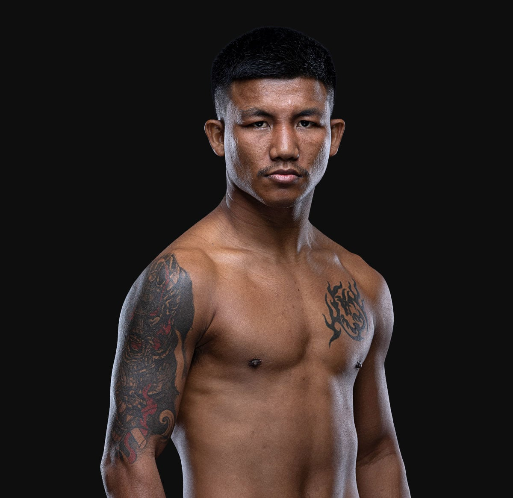

RODTANG
Rodtang entrenó inicialmente en un pequeño campamento en su provincia natal de Phatthalung, pero pronto comenzó a viajar al famoso gimnasio Jitmuangnon en Bangkok en busca de un mejor entrenamiento.
Finalmente se trasladó definitivamente al gimnasio para entrenar a tiempo completo y perseguir su sueño de convertirse en Campeón Mundial de Muay Thai.
Rodtang tuvo un gran éxito, acumulando más de 250 victorias cuando cumplió 21 años, e incluso ganó dos veces el prestigioso título del Estadio Omnoi.
